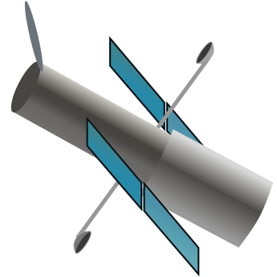
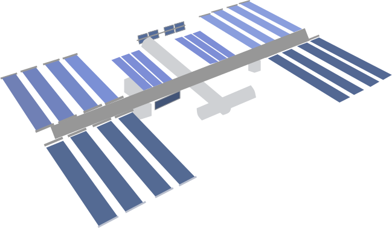
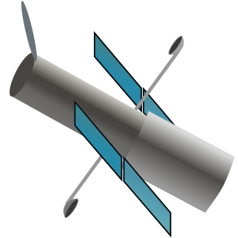
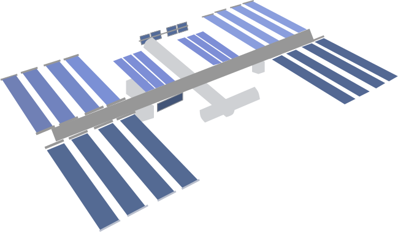
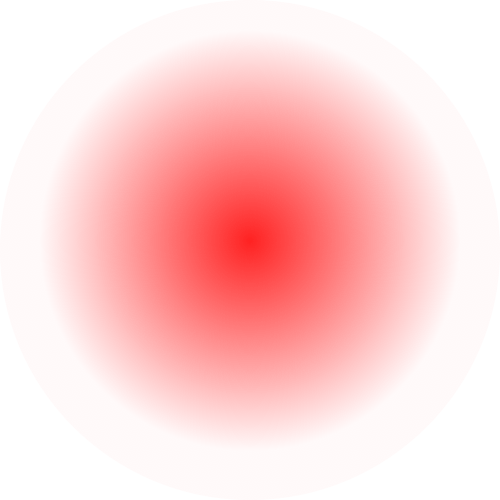
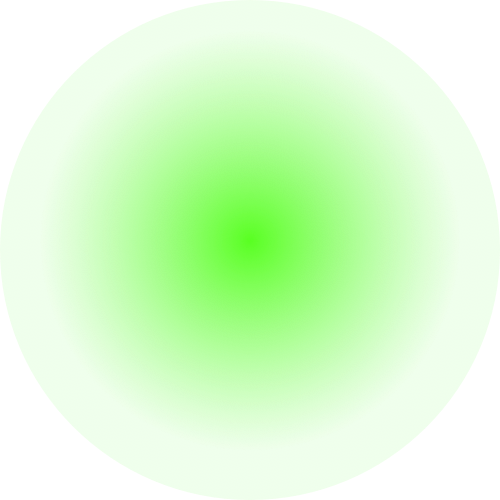
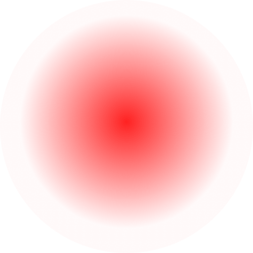
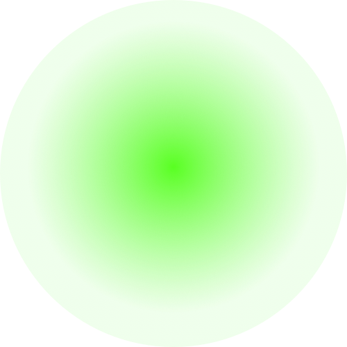

The SN provides communications and navigation services for a variety of missions/users, including launch vehicles, satellites/satellite busses, payloads, and researchers on Earth (e.g., South Pole locations).
The SN is currently composed of a fleet of relay satellites, known as the Space Segment, and associated ground systems, known as the Ground Segment. The SN Space Segment’s fleet includes the Tracking and Data Relay Satellites (TDRS), located in geosynchronous orbit, and serves as a data relay system between the SN ground systems and the user platforms.
The tandem RF/optical signal path from an SN Ground Segment terminal through a relay satellite and on to a customer/user platform is referred to as a forward link. The tandem RF/optical signal path from a customer/user platform to the relay satellite and back to a ground terminal is referred to as a return link.
The portion of a forward or return link that connects a ground terminal with the relay satellite is referred to as a Space-to-Ground Link (SGL); the portion of a forward or return link that connects the relay satellite with a customer/user platform is referred to as a Space-to-Space Link (SSL)
The ground segment of the SN includes three ground stations in Guam, White Sands, and Blossom Point.

 



 



 


